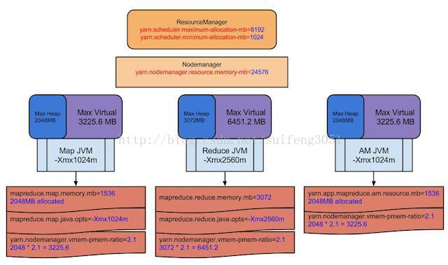
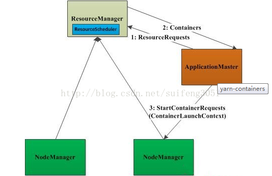
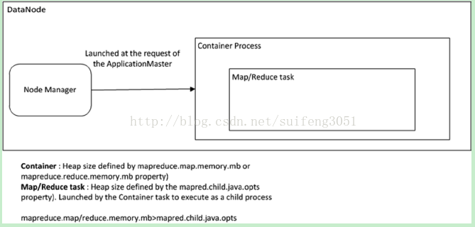

Yarn内存分配管理机制及相关参数配置
一、相关配置情况
关于Yarn内存分配与管理，主要涉及到了ResourceManage、ApplicationMatser、NodeManager这几个概念，相关的优化也要紧紧围绕着这几方面来开展。这里还有一个Container的概念，现在可以先把它理解为运行map/reduce task的容器，后面有详细介绍。
1.1 RM的内存资源配置, 配置的是资源调度相关
RM1：yarn.scheduler.minimum-allocation-mb 分配给AM单个容器可申请的最小内存
RM2：yarn.scheduler.maximum-allocation-mb 分配给AM单个容器可申请的最大内存
注：
- 最小值可以计算一个节点最大Container数量
- 一旦设置，不可动态改变
1.2 NM的内存资源配置，配置的是硬件资源相关
NM1：yarn.nodemanager.resource.memory-mb 节点最大可用内存
NM2：yarn.nodemanager.vmem-pmem-ratio 虚拟内存率，默认2.1
注：
- RM1、RM2的值均不能大于NM1的值
- NM1可以计算节点最大Container数量，max(Container)=NM1/RM1
- 一旦设置，不可动态改变
1.3 AM内存配置相关参数，配置的是任务相关
AM1：mapreduce.map.memory.mb 分配给map Container的内存大小
AM2：mapreduce.reduce.memory.mb 分配给reduce Container的内存大小
这两个值应该在RM1和RM2这两个值之间
- AM2的值最好为AM1的两倍
- 这两个值可以在启动时改变
AM3：mapreduce.map.java.opts 运行map任务的jvm参数，如-Xmx，-Xms等选项
AM4：mapreduce.reduce.java.opts 运行reduce任务的jvm参数，如-Xmx，-Xms等选项
注：
- 这两个值应该在AM1和AM2之间
二、对于这些配置概念的理解
知道有这些参数，还需理解其如何分配，下面我就一副图让大家更形象的了解各个参数的含义。

如上图所示，先看最下面褐色部分，AM参数mapreduce.map.memory.mb=1536MB，表示AM要为map Container申请1536MB资源，但RM实际分配的内存却是2048MB，因为yarn.scheduler.mininum-allocation-mb=1024MB，这定义了RM最小要分配1024MB，1536MB超过了这个值，所以实际分配给AM的值为2048MB(这涉及到了规整化因子，关于规整化因子，在本文最后有介绍)。
AM参数mapreduce.map.java.opts=-Xmx 1024m，表示运行map任务的jvm内存为1024MB,因为map任务要运行在Container里面，所以这个参数的值略微小于mapreduce.map.memory.mb=1536MB这个值。
NM参数yarn.nodemanager.vmem-pmem-radio=2.1,这表示NodeManager可以分配给map/reduce Container 2.1倍的虚拟内存，安照上面的配置，实际分配给map Container容器的虚拟内存大小为2048*2.1=3225.6MB，若实际用到的内存超过这个值，NM就会kill掉这个map Container,任务执行过程就会出现异常。
AM参数mapreduce.reduce.memory.mb=3072MB，表示分配给reduce Container的容器大小为3072MB,而map Container的大小分配的是1536MB，从这也看出，reduce Container容器的大小最好是map Container大小的两倍。
NM参数yarn.nodemanager.resource.mem.mb=24576MB,这个值表示节点分配给NodeManager的可用内存，也就是节点用来执行yarn任务的内存大小。这个值要根据实际服务器内存大小来配置，比如我们hadoop集群机器内存是128GB，我们可以分配其中的80%给yarn，也就是102GB。
上图中RM的两个参数分别1024MB和8192MB，分别表示分配给AM map/reduce Container的最大值和最小值。
三、关于任务提交过程
3.1 任务提交过程
- 步骤1：用户将应用程序提交到ResourceManager上；
- 步骤2：ResourceManager为应用程序ApplicationMaster申请资源，并与某个NodeManager通信，以启动ApplicationMaster；
- 步骤3：ApplicationMaster与ResourceManager通信，为内部要执行的任务申请资源，一旦得到资源后，将于NodeManager通信，以启动对应的任务。
- 步骤4：所有任务运行完成后，ApplicationMaster向ResourceManager注销，整个应用程序运行结束。

3.2 关于Container
（1）Container是YARN中资源的抽象，它封装了某个节点上一定量的资源（CPU和内存两类资源）。它跟Linux Container没有任何关系，仅仅是YARN提出的一个概念（从实现上看，可看做一个可序列化/反序列化的Java类）。
（2）Container由ApplicationMaster向ResourceManager申请的，由ResouceManager中的资源调度器异步分配给ApplicationMaster；
（3）Container的运行是由ApplicationMaster向资源所在的NodeManager发起的，Container运行时需提供内部执行的任务命令（可以使任何命令，比如java、Python、C++进程启动命令均可）以及该命令执行所需的环境变量和外部资源（比如词典文件、可执行文件、jar包等）。
另外，一个应用程序所需的Container分为两大类，如下：
- （a） 运行ApplicationMaster的Container：这是由ResourceManager（向内部的资源调度器）申请和启动的，用户提交应用程序时，可指定唯一的ApplicationMaster所需的资源；
- （b）运行各类任务的Container：这是由ApplicationMaster向ResourceManager申请的，并由ApplicationMaster与NodeManager通信以启动之。
以上两类Container可能在任意节点上，它们的位置通常而言是随机的，即ApplicationMaster可能与它管理的任务运行在一个节点上。
Container是YARN中最重要的概念之一，懂得该概念对于理解YARN的资源模型至关重要，望大家好好理解。
注意：如下图，map/reduce task是运行在Container之中的，所以上面提到的mapreduce.map(reduce).memory.mb大小都大于mapreduce.map(reduce).java.opts值的大小。

四、HDP平台参数调优建议
根据上面介绍的相关知识，我们就可以根据我们的实际情况作出相关参数的设置，当然还需要在运行测试过程中不断检验和调整。 以下是hortonworks给出的配置建议： http://docs.hortonworks.com/HDPDocuments/HDP2/HDP-2.1.1/bk_installing_manually_book/content/rpm-chap1-11.html
4.1 内存分配
Reserved Memory = Reserved for stack memory + Reserved for HBase Memory (If HBase is on the same node) 系统总内存126GB，预留给操作系统24GB，如果有Hbase再预留给Hbase24GB。 下面的计算假设Datanode节点部署了Hbase。
4.2containers 计算：
MIN_CONTAINER_SIZE = 2048 MB
containers = min (2*CORES, 1.8*DISKS, (Total available RAM) / MIN_CONTAINER_SIZE)
\# of containers = min (2*12, 1.8*12, (78 * 1024) / 2048)
\# of containers = min (24,21.6,39)
\# of containers = 22
container 内存计算：
RAM-per-container = max(MIN_CONTAINER_SIZE, (Total Available RAM) / containers))
RAM-per-container = max(2048, (78 * 1024) / 22))
RAM-per-container = 3630 MB
4.3Yarn 和 Mapreduce 参数配置：
yarn.nodemanager.resource.memory-mb = containers * RAM-per-container
yarn.scheduler.minimum-allocation-mb = RAM-per-container
yarn.scheduler.maximum-allocation-mb = containers * RAM-per-container
mapreduce.map.memory.mb = RAM-per-container
mapreduce.reduce.memory.mb = 2 * RAM-per-container
mapreduce.map.java.opts = 0.8 * RAM-per-container
mapreduce.reduce.java.opts = 0.8 * 2 * RAM-per-container
yarn.nodemanager.resource.memory-mb = 22 * 3630 MB
yarn.scheduler.minimum-allocation-mb = 3630 MB
yarn.scheduler.maximum-allocation-mb = 22 * 3630 MB
mapreduce.map.memory.mb = 3630 MB
mapreduce.reduce.memory.mb = 22 * 3630 MB
mapreduce.map.java.opts = 0.8 * 3630 MB
mapreduce.reduce.java.opts = 0.8 * 2 * 3630 MB
附：规整化因子介绍
为了易于管理资源和调度资源，Hadoop YARN内置了资源规整化算法，它规定了最小可申请资源量、最大可申请资源量和资源规整化因子，如果应用程序申请的资源量小于最小可申请资源量，则YARN会将其大小改为最小可申请量，也就是说，应用程序获得资源不会小于自己申请的资源，但也不一定相等；如果应用程序申请的资源量大于最大可申请资源量，则会抛出异常，无法申请成功；规整化因子是用来规整化应用程序资源的，应用程序申请的资源如果不是该因子的整数倍，则将被修改为最小的整数倍对应的值，公式为ceil(a/b)*b，其中a是应用程序申请的资源，b为规整化因子。
比如，在yarn-site.xml中设置，相关参数如下：
yarn.scheduler.minimum-allocation-mb：最小可申请内存量，默认是1024
yarn.scheduler.minimum-allocation-vcores：最小可申请CPU数，默认是1
yarn.scheduler.maximum-allocation-mb：最大可申请内存量，默认是8096
yarn.scheduler.maximum-allocation-vcores：最大可申请CPU数，默认是4
对于规整化因子，不同调度器不同，具体如下：
FIFO和Capacity Scheduler，规整化因子等于最小可申请资源量，不可单独配置。
Fair Scheduler：规整化因子通过参数yarn.scheduler.increment-allocation-mb和yarn.scheduler.increment-allocation-vcores设置，默认是1024和1。
通过以上介绍可知，应用程序申请到资源量可能大于资源申请的资源量，比如YARN的最小可申请资源内存量为1024，规整因子是1024，如果一个应用程序申请1500内存，则会得到2048内存，如果规整因子是512，则得到1536内存。